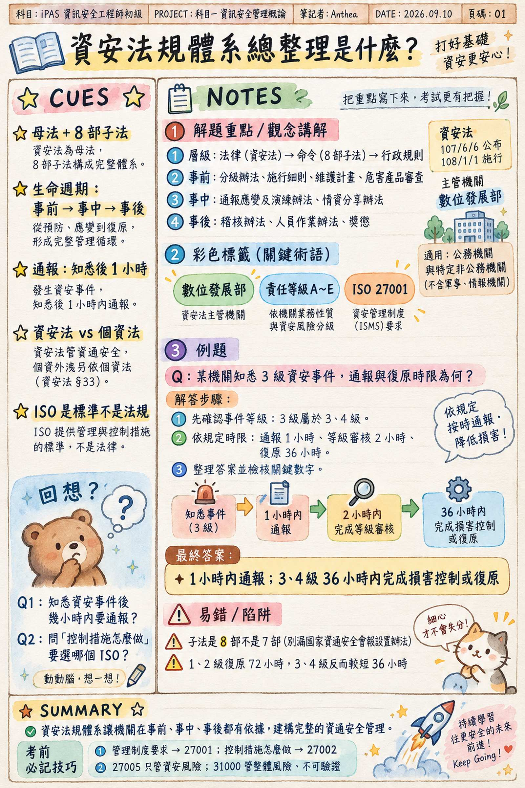

資安法規體系總整理
一句話抓住核心
先分法規層級，再依事前、事中、事後對應子法；ISO 是標準。
🎯 判斷口訣
- 法律（資安法）→ 命令（8 部子法）→ 行政規則 → 行政指導文件
- 事前：分級、維護計畫、危害產品審查；事中：通報應變演練、情資分享；事後：稽核、獎懲。
- 知悉後 1 小時內通報；1、2 級審核 8 小時／復原 72 小時；3、4 級審核 2 小時／復原 36 小時。
- 管理制度要求 → 27001；控制措施怎麼做 → 27002。
- 雲端一般控制、供應商＋客戶 → 27017；公有雲＋個資＋處理者 → 27018。
🧠 核心比喻
沿用來源的「資安管理生命週期」：對象確認 → 事前 → 事中 → 事後，將各部子法放回它處理的階段。來源未記錄個人口述比喻。
📚 正式定義
- 資安法令規範層級：法律（資安法）→ 命令（8 部子法）→ 行政規則 → 行政指導文件
- 資安法 8 部子法（依官方教材；HackMD 筆記寫 7 部是漏了會報設置辦法）：
- 組織架構：國家資通安全會報設置辦法（115/3/2）
- 基礎管理：施行細則（115/1/5）、責任等級分級辦法（115/1/7）
- 維護與稽核：維護計畫實施情形稽核辦法（115/1/5）
- 通報與分享：事件通報應變及演練辦法（115/1/5）、情資分享辦法（115/1/5）
- 人員與產品：公務機關所屬人員辦理資通安全事項作業辦法（115/1/13）、危害國家資通安全產品審查辦法（114/12/1 施行）
- 資安管理生命週期＝哪部子法管哪個階段：對象確認（母法§3）→ 事前（分級辦法→施行細則維護計畫→危害產品審查）→ 事中（通報應變演練＋情資分享）→ 事後（稽核辦法＋作業辦法獎懲）
- 資安法 vs 個資法：主管機關 數發部 vs 個人資料保護委員會；對象 公務＋特定非公務機關 vs 所有公務＋非公務機關；資安法§33 個資外洩另依個資法處理
- 母法：107/6/6 公布、108/1/1 施行；114/9/24 修正、114/12/1 施行；5 章 35 條；主管機關數位發展部；不含軍事、情報機關
關鍵數字
- 通報：知悉後 1 小時內
- 等級審核：1、2 級 8 小時／3、4 級 2 小時
- 損害控制復原：1、2 級 72 小時／3、4 級 36 小時
- 調查改善報告：1 個月內
- 演練：社交工程每半年、通報應變每年
- 稽核：1 個月前書面通知、小組 3 人以上、改善報告 1 個月內
- 罰鍰：未通報 30 萬～1,000 萬；違反維護計畫 10 萬～500 萬；拒絕調查 10 萬～100 萬
- 責任等級每 3 年提報；委外核心系統或 ≥1,000 萬須第三方檢測；日誌保留至少 6 個月
- 國家機密：絕對機密 30 年／極機密 20 年／機密 10 年；30 日內核定；112 年修法取消永久保密
- 刑法 §358/359/360：3 年 30 萬／5 年 60 萬／3 年 30 萬
- GDPR：72 小時通報；2,000 萬歐元或全球營業額 4%
ISO 判題口訣（ISO 是「標準」不是法規）
- 管理制度要求→27001；控制措施怎麼做→27002
- 雲端一般控制、供應商＋客戶→27017；公有雲＋個資＋處理者→27018
- 27005 只管資安風險；31000 管組織整體風險、不可驗證發證
- 27701:2025 可獨立驗證（2019 舊版須先有 27001）
- 27001 是唯一可第三方驗證取證的 27000 系列標準；CNS 27001/27002:2023/27005:2024 為繁中對應版
- 其他：42001 AI 管理系統、22301 營運持續、20000 IT 服務管理、17025 實驗室認證（數位鑑識）
🖼️ 資訊圖卡（康乃爾筆記）

💬 我的推理鏈
本次為整理，未經費曼追問
⚠️ 卡點紀錄
本次為整理，未經費曼追問
- 8 部子法的法源條文、時限數字尚未經三層追問驗證。
- ISO/IEC 27017 版本年份：標準比較表寫 2026、教材第 3 天寫 2015，尚未查證。
- 原稿並列「27701:2025 可獨立驗證」與「27001 是唯一可第三方驗證取證的 27000 系列標準」，本次保留來源說法，適用範圍待確認。
- 新版教材第 113 頁「表 19 ISO/IEC 27000 常見系列標準」未讀入。
- 學習指引第 4 章第 2、3 節（PAPA、稽核三方、OECD 原則）尚未練。
- 下一步：驗證「資安法 8 子法生命週期」與「通報時限數字」，再進個資法蒐集、處理、利用三階段。
🔗 概念關聯
✅ 掌握程度
- ☐ 尚未過（比喻連續卡住）
- ☐ 部分（第一輪過，驗收未完成）
- ☐ 通過（三層追問 + 驗收復盤完成）
實際狀態：整理層級，尚未驗證
📎 來源
- 唯一文字素材：source-2026-09-10-法規整理.md（本機暫存檔，未隨網頁公開）
- 原始學習日期：2026-09-10；本次依指定素材整理，未作外部法規查證。


{kind=link}